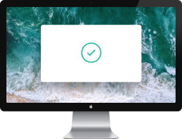
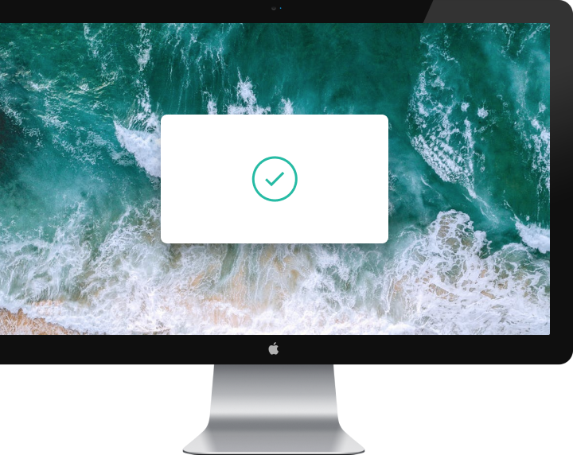
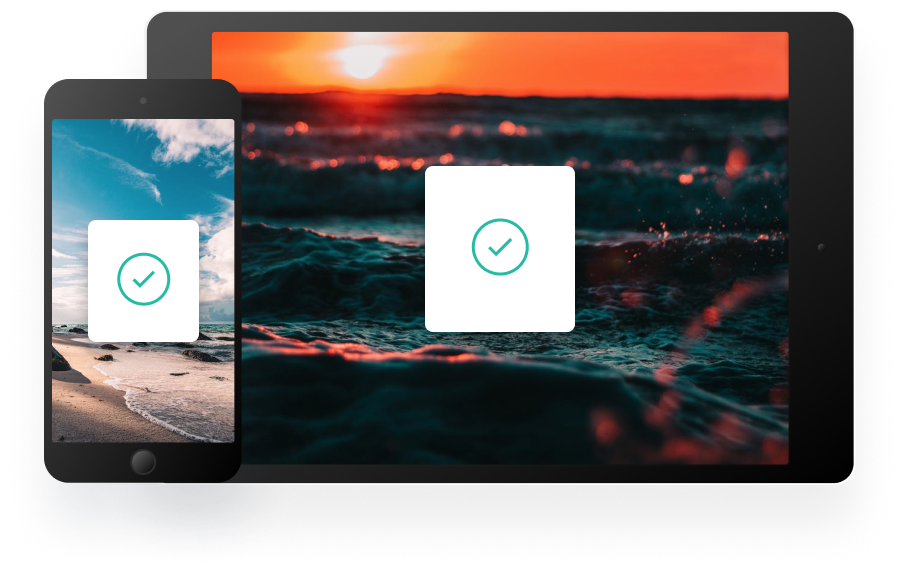

Quick Search
Easily search your snippets by content, category, web address, application, and more.
iCloud Sync
Instantly saves and syncs snippets across all your devices.
Complete History
Retrieve any snippets from the first moment you started using the app.
Access Clipboard anywhere
Whether you’re on the go, or at your computer, you can access all your Clipboard snippets in a few simple clicks.
